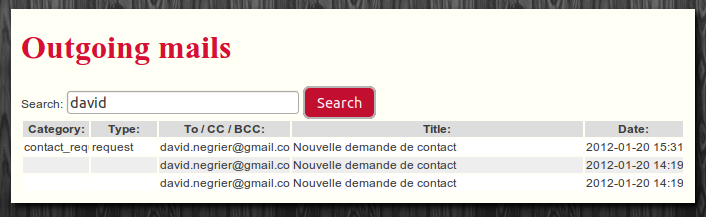

In Mouf, emails are sent using MailServices.
This package contains a mailer that does not send any mail! Instead, it stores the mail to
be sent in a database "mails" table. The DB mailer can later forward the mail to a real mailer that will indeed send the mail.
Mails are stored in the outgoing_mails table while "from", "to", "cc" and "bcc" fields are stored in the outgoing_mail_addresses table.
The stored mails can later be viewed using the Mouf user interface and can also be accessed through methods of this class.
If you pass an instance of DBMailInterface (instead of simply a MailInterface), you can add a category and a type to your mail. That could be used to sort sent mails later. The DBMail class is the default implementation of the DBMailInterface interface.
There is an install process for this package. It will require to provide a valid DB_MySqlConnection. The install process will create 3 tables if they are not alreay there: outgoing_mails, outgoing_mail_addresses and outgoing_mail_blacklist.
You use this service as you would use any MailService.
For instance, to send a mail, you just need to write:
$mailService = Mouf::getDBMailService();
$mail = new DBMail();
$mail->setBodyText("This is my mail!");
$mail->setBodyHtml("This is my <b>mail</b>!");
$mail->setFrom(new MailAddress("my@server.com", "Server"));
$mail->addToRecipient(new MailAddress("david@email.com", "David"));
$mail->setTitle("My mail");
$mail->setCategory("My category");
$mail->setType("My type");
$mailService->send($mail);
The code above assumes that you configured an instance in Mouf called "dbMailService".
You can access the sent mails database directly from the Mouf administration interface. You just need to click on the Utils menu and click the View outgoing mails submenu.
